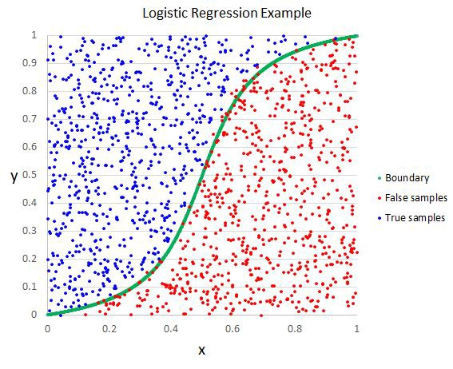
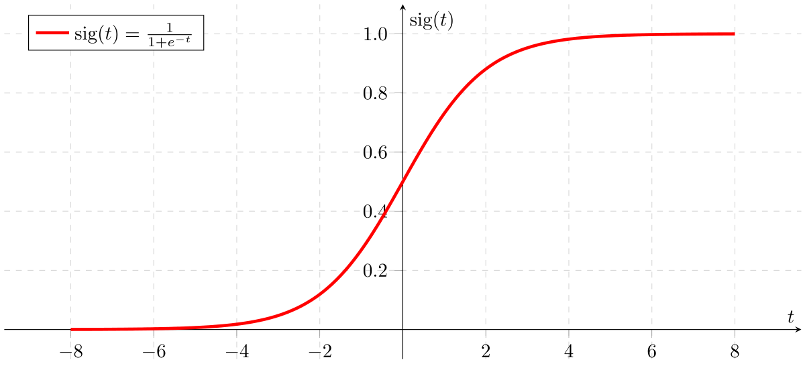
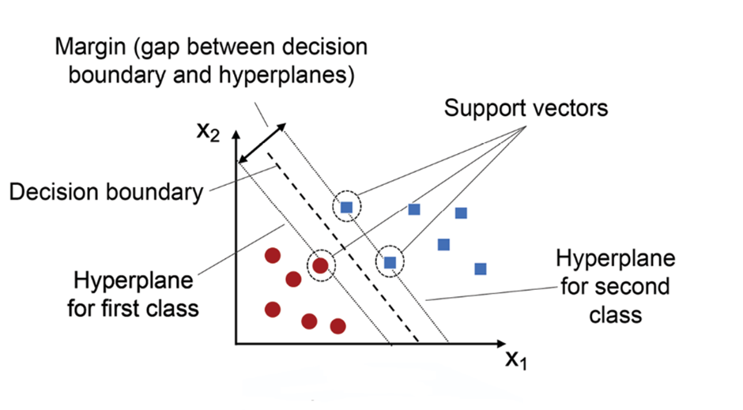

Keyboard shortcuts:
N/СпейсNext Slide
PPrevious Slide
OSlides Overview
ctrl+left clickZoom Element
If you want print version => add '
?print-pdf' at the end of slides URL (remove '#' fragment) and then print.
Like: https://wwwcourses.github.io/...CourseIntro.html?print-pdf
Linear models for classification
Created for

Iva E. Popova, 2024,

Logistic Regression
Overview
- Logistic regression predicts the probability of an instance belonging to one of two classes (e.g., 0 or 1, true or false).
- Logistic regression uses the same equation as linear regression, but the sigmoid function is applied to the output of the linear equation.
- It is widely used for its simplicity and interpretability.
- Scikit: LogisticRegression 
{kind=link}
The Logistic Function
- The Logistic Function is a sigmoid curve that transforms any real-valued input $x$ into a value between 0 and 1. It is defined as: $$ σ(x) = \frac{1}{1 + e^{-x}} $$
- In logistic regression, we pass to the Logistic Function the linear combination of input features and their respective coefficients (\( \theta \)): \[ z = \theta_0 + \theta_1 x_1 + \theta_2 x_2 + \dots + \theta_n x_n \] Here, \( \theta_0, \theta_1, \dots, \theta_n \) are the model parameters (coefficients), and \( x_1, x_2, \dots, x_n \) are the input features.
- By passing $z$ through the sigmoid function, we obtain a value between 0 and 1, which can be interpreted as the probability of the target variable being in a certain class. 
{kind=link}
How it works
- The model estimates the probability \( P(Y=1|X) \) using the logistic function applied to a linear combination of input features \( X \): $$ P(Y=1|X) = \sigma(\theta_0 + \theta_1 X_1 + \theta_2 X_2 + \ldots + \theta_n X_n) $$
- \( P(Y=1|X) \) is the probability that Y is equal to 1 given the input features \( X \).
- \( \theta_0, \theta_1, \ldots, \theta_n \) are the model coefficients (also called weights and often denoted by $w$).
- Logistic regression uses the log-loss (cross-entropy) cost function to measure the difference between the predicted probabilities and the actual class labels: $$ J(\theta) = -\frac{1}{m} \sum_{i=1}^{m} [y_i \log(h_\theta(x_i)) + (1 - y_i) \log(1 - h_\theta(x_i))] $$ where \( h_\theta(x_i) \) is the predicted probability, \( y_i \) is the actual label, and \( m \) is the number of training examples.
- The goal is to find the weights \( \theta \) that minimize the cost function ($J(\theta)$). This is typically done using optimization algorithms like gradient descent.
- The model defines a decision boundary at \( P(Y=1|X) = 0.5 \). If the predicted probability is greater than 0.5, the instance is classified as class 1; otherwise, it is classified as class 0.
Example
- View as html: LogisticRegression - TitanicDemo.html
Support Vector Machines
Support Vector Machines
Overview
- Support Vector Machines (SVM) are a set of supervised learning methods used for classification, regression, and outlier detection
- SVM classifier aims to find the optimal hyperplane that best separates the data into different classes. In 2D, this hyperplane is a line; in 3D, it's a plane; and in higher dimensions, it's a hyperplane.
- The hyperplane is chosen to maximize the margin, which is the distance between the hyperplane and the nearest data points from each class. These nearest points are called support vectors.
- Scikit: Support Vector Machines 
{kind=link}
How it works
- For linearly separable data, SVM finds a straight hyperplane that separates the classes. The decision function is: $$ f(x) = \mathbf{w} \cdot \mathbf{x} + b $$ where \( \mathbf{w} \) is the weight vector, \( \mathbf{x} \) is the input vector, and \( b \) is the bias.
- The SVM optimization problem aims to minimize the following cost function: $$ \min_{\mathbf{w}, b} \frac{1}{2} \|\mathbf{w}\|^2 + C \sum_{i=1}^{n} \max(0, 1 - y_i (\mathbf{w} \cdot \mathbf{x}_i + b)) $$ where \( C \) is the regularization parameter, \( y_i \) are the class labels, and \( \mathbf{x}_i \) are the input vectors.
- The parameter \( C \) controls the trade-off between maximizing the margin and minimizing the classification error.
Examples
Perceptron
Perceptron
Overview
- The perceptron is one of the simplest linear classifiers, based on a single-layer neural network.
- The Perceptron aims to find a linear decision boundary that separates two classes by updating its weights iteratively to minimize classification error.
- The Perceptron makes predictions based on a weighted sum of the input features: $$ y = \begin{cases} 1 & \text{if } \mathbf{w} \cdot \mathbf{x} + b > 0 \\ 0 & \text{otherwise} \end{cases} $$ where \( \mathbf{w} \) is the weight vector, \( \mathbf{x} \) is the input vector, and \( b \) is the bias term.
- Scikit: Perceptron

Multi-class classification with Linear models.
Multi-class classification with Linear models.
ne-vs-All (OvA) for Multiclass Classification
- One-vs-All (OvA), also known as One-vs-Rest (OvR), is a strategy to extend binary classifiers to handle multiclass classification problems
{kind=link}
- Objective: OvA aims to classify instances into one of \( K \) classes using binary classifiers.
- Approach:
- For each class \( k \) (where \( k = 1, 2, \ldots, K \)), create a binary classifier that distinguishes between class \( k \) and all other classes.
- Train \( K \) binary classifiers. Each classifier \( C_k \) is trained to predict whether an instance belongs to class \( k \) (positive class) or not (negative class).
- Training:
- For each classifier \( C_k \), label instances of class \( k \) as positive (\( +1 \)) and all other instances as negative (\( -1 \)).
- Train the binary classifier \( C_k \) using these labeled instances.
- Prediction
- To predict the class of a new instance, run all \( K \) binary classifiers.
- The final predicted class is the one with the highest confidence score (e.g., highest probability or margin) from its respective classifier.
- Advantages
- Simple to implement.
- Leverages existing binary classification algorithms.
- Disadvantages
- May lead to imbalanced classification problems, as each binary classifier deals with one class versus all others.
- Classifiers may be biased towards the majority class in their binary setting.